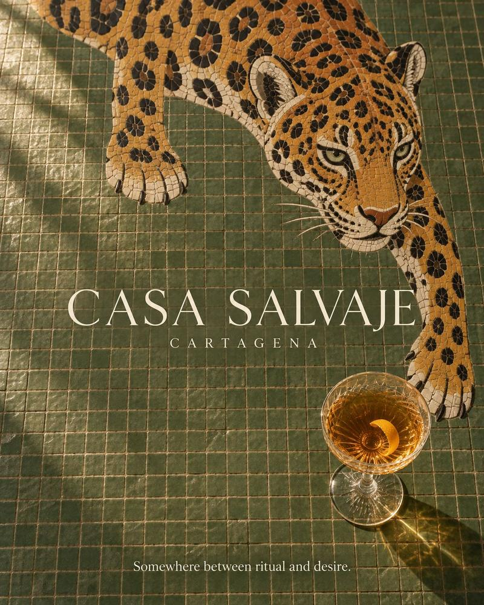

Des maisons qui se souviennent : d’autres hôtels boutique à Carthagène
Un aqueduc vieux de trois cents ans, la demeure d’un comte et les maisons de Getsemaní, le quartier qui a poussé à l’indépendance.

À Carthagène, les maisons ont une voix. Les escaliers de bois craquent, une fontaine murmure dans le patio et, à l’heure de la sieste, un ventilateur de plafond tourne lentement au-dessus de murs qui ont vu passer quatre siècles. Nous avons déjà évoqué la Casa del Arzobispado, le Santa Clara et le Charleston Santa Teresa. Voici une nouvelle sélection d’hôtels boutique, à l’intérieur comme à l’extérieur des remparts, pour qui veut dormir dans une maison chargée d’histoire.
Des maisons qui se souviennent
Carthagène a été bâtie pour durer. Dès sa fondation en 1533, chaque pillage, à commencer par le sac de Francis Drake en 1586, convainquit la Couronne d’Espagne de la fortifier un peu plus, et ses maisons furent construites en pierre, avec des murs épais, de hauts plafonds et des patios pensés pour la chaleur des Caraïbes. Voilà pourquoi tant d’entre elles sont encore debout : l’UNESCO a inscrit la ville au patrimoine mondial en 1984.
Hors les murs grandit une autre ville, celle des esclaves affranchis, des charpentiers, des forgerons et des pêcheurs : Getsemaní. À l’intérieur, le quartier de San Diego se développa autour du couvent franciscain qui lui donna son nom. Ces deux quartiers abritent aujourd’hui quelques-uns des hôtels les plus singuliers de la ville.
C’est une ville que l’on garde en soi. Le poète Raúl Gómez Jattin y est né en 1945, a grandi entre Carthagène et la vallée du Sinú, et y est mort en 1997 ; il est aujourd’hui un poète culte en Colombie. Le lire avant de venir est une belle façon d’arriver aux Caraïbes les yeux grands ouverts.
Certains hôtels sont décorés d’antiquités ; d’autres sont eux-mêmes l’antiquité.
I · Dans les remparts
Aqueducs et comtes
Casa San Agustín
Trois maisons coloniales restaurées dans la ville fortifiée, réunies autour d’un tronçon de l’ancien aqueduc de la ville qui longe aujourd’hui la piscine. Membre de The Leading Hotels of the World, c’est l’une des adresses les plus élégantes du Centre historique.
Les trois maisons datent du XVIIe siècle, et l’aqueduc qui les relie, vieux d’environ trois cents ans, est l’un des rares vestiges du réseau d’eau d’origine de la ville. Des fresques originales subsistent dans la bibliothèque, et les anciennes poutres de bois au plafond : certains hôtels sont décorés d’antiquités ; d’autres sont eux-mêmes l’antiquité.
À ne pas manquer les fresques de la bibliothèque.
Casa Pestagua
Une demeure coloniale aristocratique devenue hôtel, avec ses patios et ses suites spacieuses. En 2023, elle est devenue le premier membre Relais & Châteaux de Colombie et a été élue meilleur hôtel historique du continent.
Le comte de Pestagua la fit bâtir au XVIIIe siècle, Calle Santo Domingo, et la voulut à la mesure de sa fortune. Son grand patio central, ombragé de palmiers, reste l’un des plus beaux de la ville fortifiée.
À ne pas manquer le petit-déjeuner dans le patio aux palmiers.
II · San Diego
Le quartier qui baisse la voix
Hotel Quadrifolio
À San Diego, le coin le plus paisible du Centre historique, une maison coloniale abritant une poignée de chambres décorées chacune différemment, un patio verdoyant, une piscine et un jacuzzi sur le toit. Son nom vient du motif à quatre feuilles que l’on retrouve dans l’architecture coloniale.
À quelques rues, à la lisière nord du quartier, se trouvent Las Bóvedas : une longue rangée d’arcades élevée à la fin du XVIIIe siècle entre les bastions de Santa Clara et de Santa Catalina pour servir d’entrepôts militaires, puis de cachots. Aujourd’hui, les anciennes cellules vendent de l’artisanat et, au coucher du soleil, depuis le rempart d’en face, la mer apparaît exactement telle que la voyaient les sentinelles.
Idéal pour séjourner dans le Centre historique sans le bruit de la nuit.
III · Getsemaní
De l’autre côté du rempart
Juste au-delà des remparts, Getsemaní est le quartier des fresques murales, de la musique de rue et de la Plaza de la Trinidad.
Ce quartier d’artisans a changé l’histoire du pays. Le 11 novembre 1811, les lanceros de Getsemaní, menés par Pedro Romero, s’emparèrent des canons des bastions et firent pression sur la junte au pouvoir jusqu’à ce que Carthagène proclame son indépendance absolue vis-à-vis de l’Espagne, première ville de Nouvelle-Grenade à le faire. Aujourd’hui, la rébellion a un autre son : les picós, ces énormes sound systems qui animent les fêtes de quartier depuis les années 1950, et la champeta, née à Carthagène de racines africaines et palenqueras, font toujours danser la ville.
Casa del Coliseo
Un boutique-hôtel de luxe avec fresques murales et piscine.
Casa Lola
Une maison coloniale du XVIIe siècle reliée à un bâtiment de la fin du XIXe, avec terrasse sur le toit et piscines.
Idéal pour vivre Getsemaní la nuit et rentrer à pied.
Épilogue
Le retour à pied
Depuis n’importe laquelle de ces maisons, la nuit se vit à pied : à l’intérieur des remparts si vous logez dans le Centre historique ou à San Diego, en traversant vers le Centre si vous êtes à Getsemaní. À cette heure, les façades perdent leurs couleurs et gagnent leurs ombres, et la ville ressemble de nouveau à celle qu’imaginaient ses poètes.
- Casa San Agustín Voir sur la carte
- Casa Pestagua Site web · Voir sur la carte
- Hotel Quadrifolio Voir sur la carte
- Casa del Coliseo Voir sur la carte
- Casa Lola Voir sur la carte
Tous se trouvent à quelques pas ou à un court trajet de Casa Salvaje, Calle Santa Teresa #32-41. Consultez les horaires et réservez votre table.
Pour la première partie de la sélection, lisez les hôtels boutique du Centre historique.